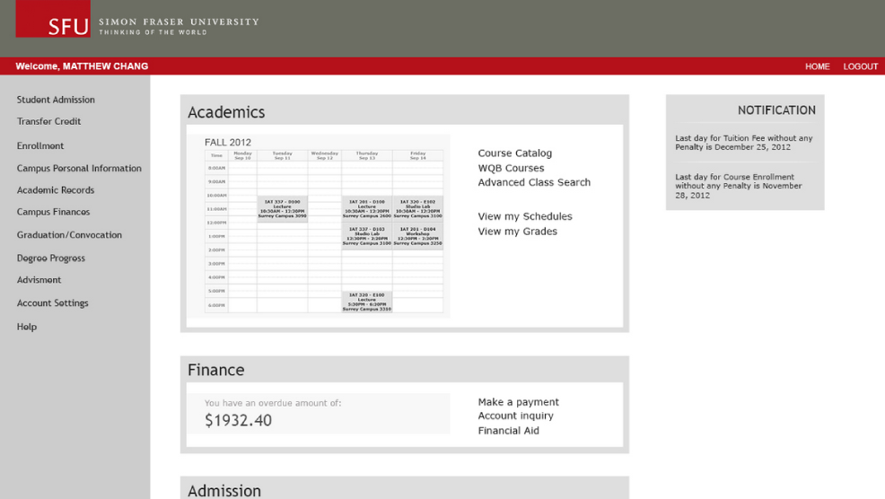
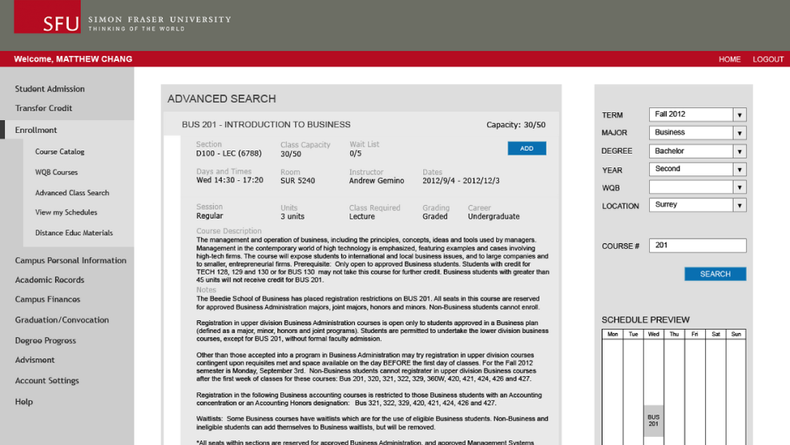
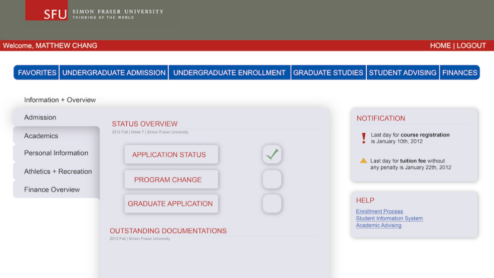
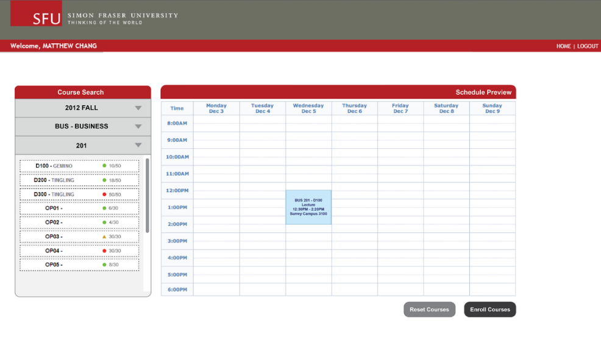

Type
HCI
Role
Project manager
Usability analysis
User testing
Interface designer
Tools


Team
Soojin Lee
Yan Yao Li
Bruce Lui
Yee Loong Ooi
Jun Peng
Award
2013 SIAT Showcase Competition Runner up

Objective
Redesign an interface to maximize and enhance user experience through interaction.
Process
By learning the methods of Human-Computer Interaction design concepts, the team has chosen to redesign the interface of the SFU SIS Enrollment System. The reason for such is that as a student, it is often frustrating in using the system when certain tasks cannot be achieved due to low visual queries and cues. First, we started with a heuristic evaluation, then tested the old system with various level of users from potential SFU students to graduates. With the information gathered, two new prototypes were developed. Throughout the process, I was responsible for facilitating user testing sessions to get more insights from SFU students, concept generation and illustration of the interfaces.
Result
The outcome was that the vulnerable information gathered helped the team truly understand students’ needs during the enrollment process. With the data obtained, it was our duty to extend SFU students’ voices in solving the issues. As a result, the project was selected as a finalist at the 2013 SIAT Showcase Competition under the Programming and Systems Design category.
Current System
Prototype A
Prototype B
- 
- 
- 
- 